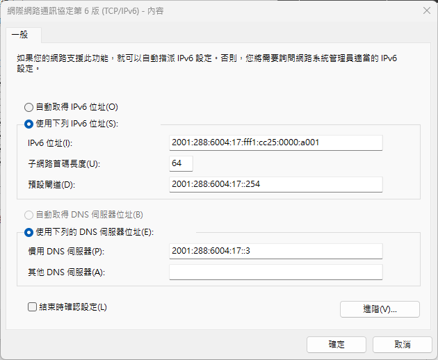
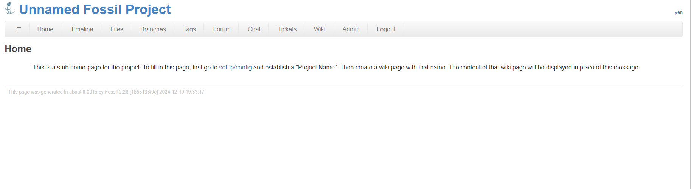

task2.5 <<
Previous Next >> task3
IPv6
根據 1a_stud.txt 中的學員序號, 每位學員分配一個固定的 IPv6 網址:
學員序號為 1的固定 IPv6 分配: 2001:288:6004:17:fff1:cc25:0000:a001
IPv6 網路設定畫面如下:

account_network_setup.7z
固定 IPv6 與 Fossil SCM 結合使用:
利用 fossil init 建立一個空白的 wcm.fossil 資料庫, fossil 會使用目前登入的使用者帳號, 然後以亂數建立該帳號的對應密碼, 且讓此帳號作為資料庫的管理者.
由於 wcm.fossil 為 SQLite 資料庫格式, 因此可以使用 sqlite3.exe 進入後, 利用 SQL 語法更改任何帳號的對應密碼.
C:\tmp>fossil init wcm.fossil
C:\tmp>fossil init wcm.fossil
project-id: 7a2ba6d35aa1be96a6fed38503023877a95eb2ab
server-id: 84002c6209d73504f02af0cd280ecba424e1c298
admin-user: yen (initial password is "3E9yhxzQtr")
C:\tmp>sqlite3 wcm.fossil
SQLite version 3.49.0 2025-02-06 11:55:18
Enter ".help" for usage hints.
sqlite> update user set pw='yen' where login='yen';
sqlite>
C:\tmp>fossil ui wcm.fossil
執行 fossil ui 後, 系統會自動跳出以下畫面:

之後希望將作業倉儲內容納入上列 wcm.fossil, 其操作步驟:
C:\tmp>git clone https://github.com/mdewcm2025/hw-scrum-1.git wcmhw
可以將作業倉儲內容放入 wcmhw 目錄中.
接著要求將空的 wcm.fossil 倉儲的最新版 (名稱為 trunk) 強制解開到 wcmhw 目錄
C:\tmp>cd wcmhw
C:\tmp\wcmhw>fossil open ./../wcm.fossil --force
接下來只要利用 fossil add 與 commit 指令就可以將作業倉儲內容"新增提交"進入 wcm.fossil 倉儲的版本控制中.
C:\tmp\wcmhw>fossil add .
C:\tmp\wcmhw>fossil commit -m "add 作業倉儲內容"
然後回答 "a" 表示要將上列納入的所有資料進行提交, 而該提交版本內容將會註記在 wcm.fossil 倉儲中.
C:\tmp\wcmhw>cd ..
C:\tmp>fossil ui wcm.fossil
就可以利用全球資訊網介面 (http://localhost:8081) 檢查 wcm.fossil 的最新版內容
其中若進入 Admin - Settings, 在 default-csp 欄位填入"https://fonts.googleapis.com", 在 ignore-glob 欄位填入 "__pycache__".
default-csp 代表可以跨網站擷取 https://fonts.googleapis.com 網站中的字型資料檔案, 而 ignore-glob 表示之後若有執行 Python 程式所產生的暫存檔案, 可以忽略, 不會因為新增提交而進入倉儲資料中.
至於作業倉儲的ˋ靜態網站, 可以從 http://localhost:8081/doc/trunk/index.html 進行檢視, 其中的 trunk 表示是該倉儲的最新版本.
task2.5 <<
Previous Next >> task3